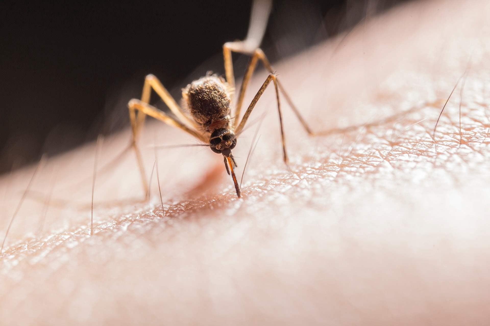

Detecting Malariya with Deep Learning using Blood Smears.
The project's objective was to replace the method of detection of Malariya from manual diagnosis to an automated diagnosis using Deep Learning. Here I have created a CNN from scratch using tensorflow along with the use of some Image processing techniques such as resize, rotate, blur etc. to increase the efficiency of the model over the data-set. The data-set is available
here. The Project code is available in pdf
here.

Kharagpur RoboSoccer Students' Group
The research objective of the group is to build and study cooperative multi-agent systems in the highly dynamic adversarial environment of RoboSoccer. Particularly, I work on motion planning and the FSM architecture based codebase.
JARVIC (Just A Rather Very Intelligent Chatbot)
JARVIC is an automated conversational agent that classifies the emotion of the user and forms replies based on his/her predicted emotional state. It uses a Seq2Seq and Bayesian Classifier for front end and an android based application created using Android Studio and Java Socket Programming for back end.